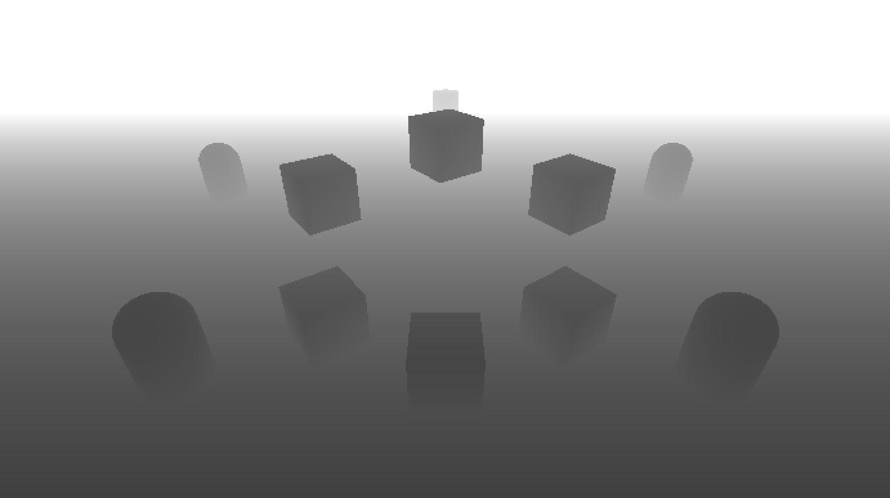

Recently, I saw my friend shared the presentation from Unity Blog by Kuba Cupisz and Ole Ciliox.
“SPECIAL EFFECTS WITH DEPTH” TALK AT SIGGRAPH
I have started reading it and made some practices until today.
The presentation contains several features with Depth Buffer which are intersection highlights, force field effect, object outlines and fog.
And I implemented the intersection highlights effect in this practice.
Below are the result and implement steps I have tried to test the intersection effect.
Depth Buffer
In order to read Depth Buffer, we had to switch the camera to Depth mode.
using UnityEngine;
public class DepthMode : MonoBehaviour
{
private void Awake()
{
GetComponent<Camera>().depthTextureMode = DepthTextureMode.Depth;
}
}And implemented a simple post effect to verify the Depth Buffer is correct.

Intersection Highlights Plane
Then, we could start to compare the depth value with the world position of the pixel.
Once the depth value approximated the world position z of the pixel, instead the final color with the intersection color.
And we would have the result like this.
Intersection with glancing and UVs animation effect
Finally I added the glacing effect and the UVs animation with simple tween animation.
Below are the final results.